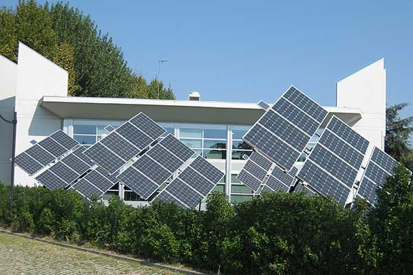

Deux devis annoncent « garantie longue durée » et pourtant ils ne couvrent pas la même chose. Une installation solaire comporte en réalité quatre garanties différentes, portées par des acteurs différents, avec des durées différentes. Savoir les distinguer, c'est savoir comparer deux offres.
Elle couvre le défaut de fabrication du panneau lui-même : délaminage, infiltration, défaillance de la boîte de jonction. C’est la garantie du fabricant, et elle ne dit rien de la production.
Distincte de la précédente, elle porte sur la puissance encore délivrée après un certain nombre d’années. Le fabricant s’engage sur un niveau de performance résiduel, pas sur l’absence de panne. Sa durée est en général nettement plus longue que la garantie produit, ce qui explique qu’on les confonde.
C’est la plus courte des trois, et la plus importante en pratique. L’onduleur est la pièce qui tombera en panne en premier. Vérifiez sa durée, les conditions d’extension et si celle-ci doit être souscrite à l’installation ou peut l’être plus tard.
Elle couvre la pose : fixations, étanchéité des percements, câblage, raccordement. C’est celle qui vous protège le jour où une infiltration apparaît autour d’un support. Elle dépend de l’entreprise, pas du fabricant, et elle ne vaut que si l’entreprise existe encore.
Qui intervient en cas de panne ? Le fabricant remplace parfois la pièce mais ne prend pas en charge la main-d’œuvre ni l’échafaudage. Un panneau gratuit posé à vos frais en toiture reste une dépense.
Les frais de déplacement et de dépose sont-ils inclus ? C’est le point qui crée le plus de mauvaises surprises, et il se règle par une phrase dans le devis.
Que se passe-t-il si le fabricant disparaît ? Une garantie de longue durée n’a de valeur que si son émetteur existe encore. La solidité du fabricant fait partie du choix, au même titre que la fiche technique.
La garantie est-elle transférable à l’acheteur du bien ? Cela compte si vous envisagez de vendre, et c’est un argument de vente réel, au même titre que le certificat PEB.
Une pose non conforme aux prescriptions du fabricant, une intervention par un tiers non habilité, ou un défaut d’entretien documenté peuvent faire tomber la couverture. C’est une raison de plus pour que la pose et le suivi restent chez le même interlocuteur, et pour conserver les documents d’installation.
Un autre cas est souvent oublié : des travaux de toiture réalisés après coup par une autre entreprise. Si la couverture doit être reprise, mieux vaut avoir traité la question avant la pose que de découvrir que la dépose annule la garantie.
Les quatre durées clairement distinguées, la prise en charge ou non de la main-d’œuvre et des frais de déplacement, les conditions d’extension de la garantie onduleur, la transférabilité, et les causes d’exclusion. Chacun de ces points se vérifie avant la signature, pas au moment de la panne.
Un devis qui annonce une durée sans préciser ce qu’elle couvre n’est pas comparable. Nous mettons les offres en regard sur ces critères plutôt que sur le seul montant.
La garantie produit couvre un défaut de fabrication du panneau. La garantie de rendement porte sur la puissance encore délivrée après un certain nombre d'années. Elles ont des durées différentes et ne se remplacent pas : il faut les deux.
Pas automatiquement. Un fabricant peut remplacer une pièce sans prendre en charge la main-d'œuvre, le déplacement ni l'échafaudage. C'est la question la plus utile à poser avant de signer, et elle doit être tranchée par écrit dans le devis.
La garantie de pose dépend de l'entreprise : si elle n'existe plus, elle ne vaut plus. Les garanties fabricant subsistent mais quelqu'un doit intervenir sur place. C'est pourquoi l'ancrage local de l'installateur compte autant que la fiche technique.
Durées, main-d'œuvre, déplacement, extension et exclusions : notre étude gratuite met les offres en regard sur ce qui compte, pas sur le seul montant.
Vérifier mon éligibilitéWhatsApp